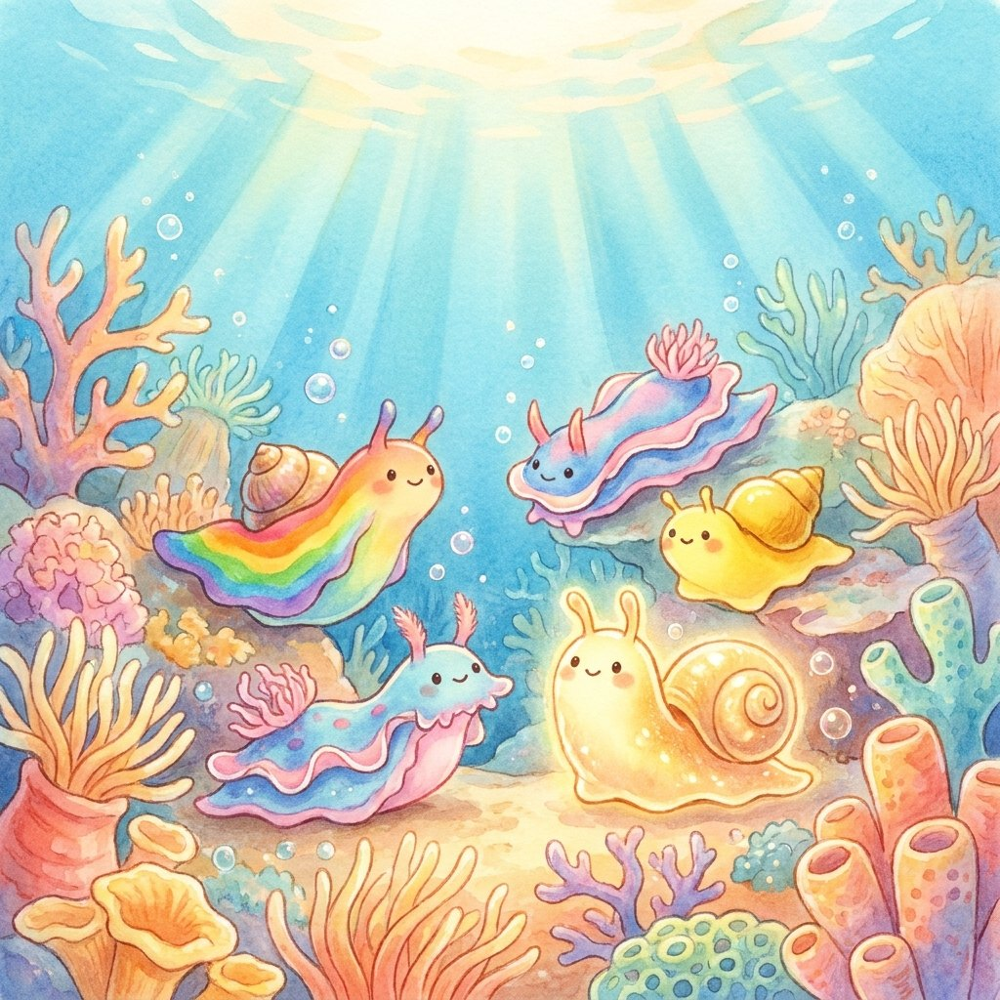

נפלאות הבריאה
ברלה ברלה צא החוצה
על הפרק: חלזונות הים הם לא כמו החלזונות שבגינה: יש ביניהם בכל צבעי הקשת, כאלה שמשנים צורה וזוהרים בחושך, ואפילו כאלה שמצמיחים לעצמם גוף חדש מהראש בלבד!
0:00
--:--
לא הצלחנו לטעון את ההקלטה. בדקו את החיבור לאינטרנט ונסו שוב.